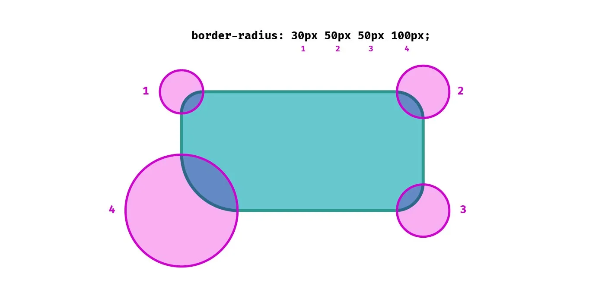
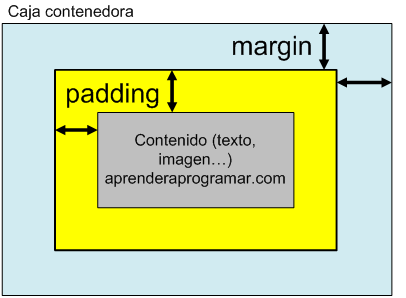

| font-size |
Cambia el tamaño del texto. |
px, %, em, rem |
font-size: 16px; |
 |
MDN Font-Size |
| border-radius |
Redondea las esquinas de un elemento. |
px, % |
border-radius: 10px; |
 |
MDN Border-Radius |
| display |
Define cómo se debe mostrar un elemento en la página. |
block, inline, inline-block, flex, grid, none |
display: flex; |
 |
MDN Display |
| flexbox (display: flex) |
Utiliza Flexbox para diseñar elementos en un contenedor flexible. |
flex-direction, justify-content, align-items |
display: flex; justify-content: center; |
 |
MDN Conceptos Basicos de Flexbox |
| position |
Especifica el método de posicionamiento de un elemento. |
static, relative, absolute, fixed, sticky |
position: absolute; top: 50px; |
 |
MDN Position |
| box-shadow |
Aplica una sombra a un elemento. |
Valores de desplazamiento, desenfoque, color |
box-shadow: 5px 5px 15px rgba(0,0,0,0.5); |
 |
MDN Box-Shadow |
| overflow |
Controla cómo se muestra el contenido que excede el área de un contenedor. |
visible, hidden, scroll, auto |
overflow: hidden; |
 |
MDN Overflow (excedente) |
| z-index |
Define el orden en el eje z de los elementos (superposición). |
Números enteros |
z-index: 10; |
 |
MDN Z-Index |
| opacity |
Establece el nivel de transparencia de un elemento. |
Valores entre 0 (transparente) y 1 (opaco) |
opacity: 0.5; |
 |
MDN Opacity |
| margin y padding |
El margin define el espacio exterior mientras que el padding el espacio interior de un elemento. |
Valores en px, %, auto |
margin: 10px; padding: 20px; |
 |
MDN Margin / MDN Padding |